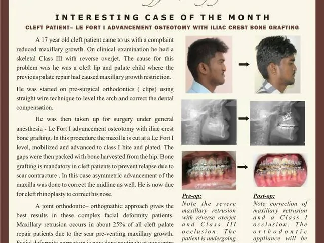
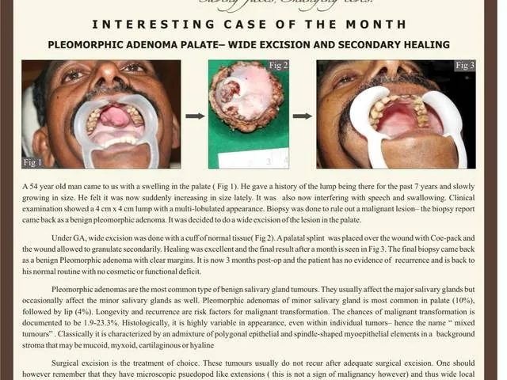
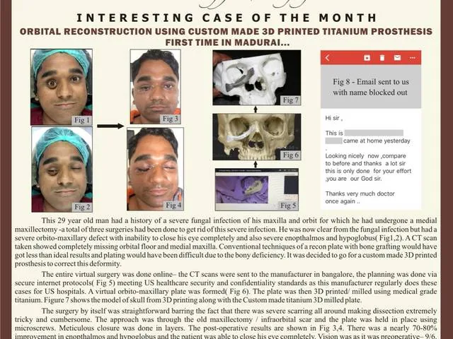
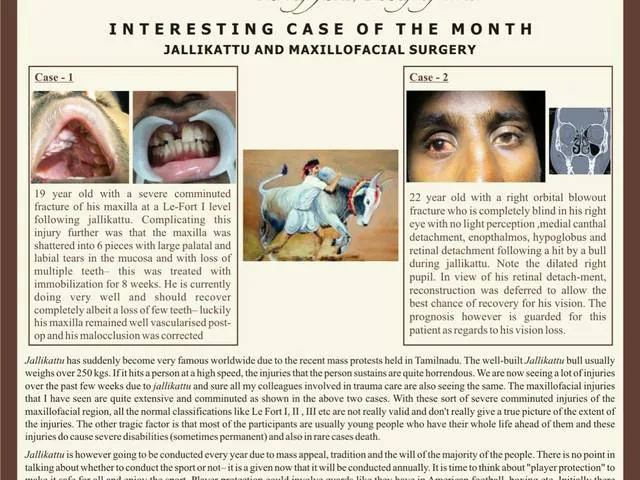
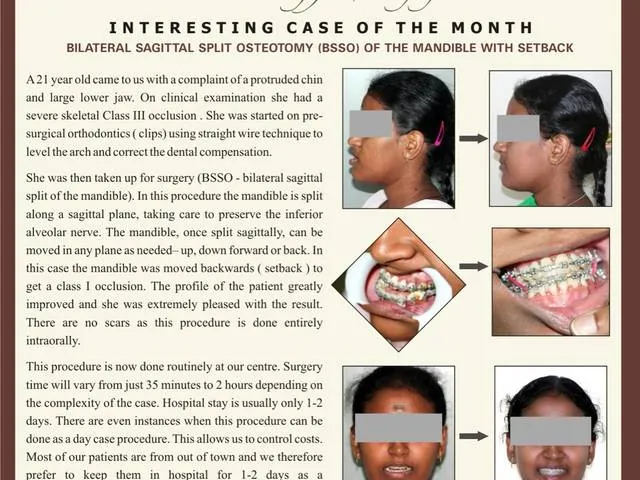

Latest case
November 2025
Every month we document an interesting case from our theatre lists, in addition to our routine clinical work.
Maxillofacial surgery and Orthodontics concerns surgical and non-surgical treatment of the face, head and neck and jaws. The following pages contain surgical pictures including intra-operative, pre and post operative images. We understand that it may not be appropriate for general viewing and these images are shown with the sole aim of educating and creating awareness among the general population about the problems associated with facial surgery, its potential complications and its possible solutions.
These images are completely under the copyright of the hospital and the viewer does not have any claim whatsoever to these images.
Tick the box above to continue.
Latest case
November 2025
November 2025
 October 2025
October 2025
 September 2025
September 2025
 July 2025
July 2025
 June 2025
June 2025
 May 2025
May 2025
 April 2025
April 2025
 March 2025
March 2025

February 2025 November 2024
November 2024
 October 2024
October 2024
 September 2024
September 2024
 August 2024
August 2024
 July 2024
July 2024
 April 2024
April 2024
 March 2024
March 2024
 February 2024
February 2024
 January 2024
January 2024
 December 2023
December 2023
 November 2023
November 2023
 October 2023
October 2023
 September 2023
September 2023

August 2023
July 2023 June 2023
June 2023

May 2023 April 2023
April 2023
 March 2023
March 2023
 February 2023
February 2023
 January 2023
January 2023
 November 2022
November 2022
 October 2022
October 2022
 September 2022
September 2022
 August 2022
August 2022
 July 2022
July 2022

June 2022 May 2022
May 2022
 May 2022
May 2022
 April 2022
April 2022
 March 2022
March 2022
 February 2022
February 2022
 January 2022
January 2022
These images are shown with the sole aim of educating and creating awareness among the general population about the problems associated with facial surgery, its potential complications and its possible solutions. Select any case to read it full size.
We are located 2 minutes’ walk from the Anna Bus Stand, with adequate off-street car parking.